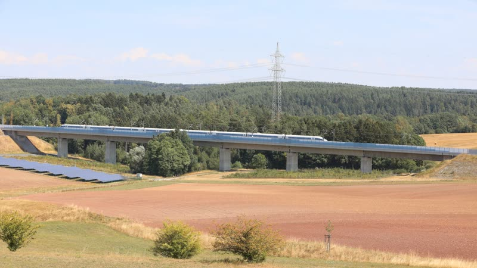
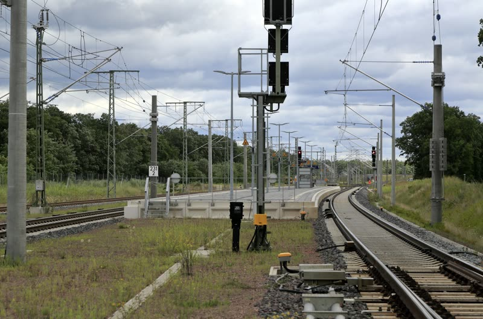
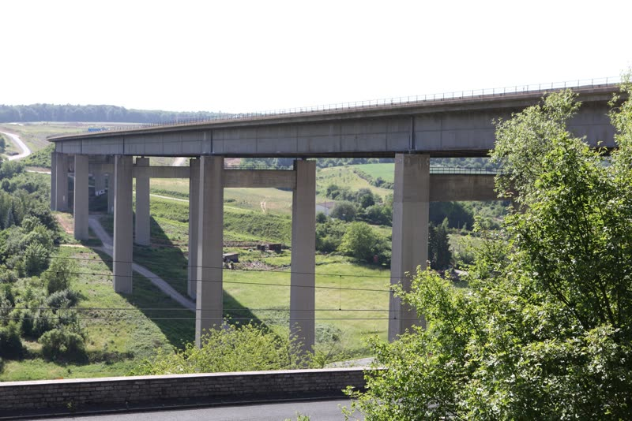
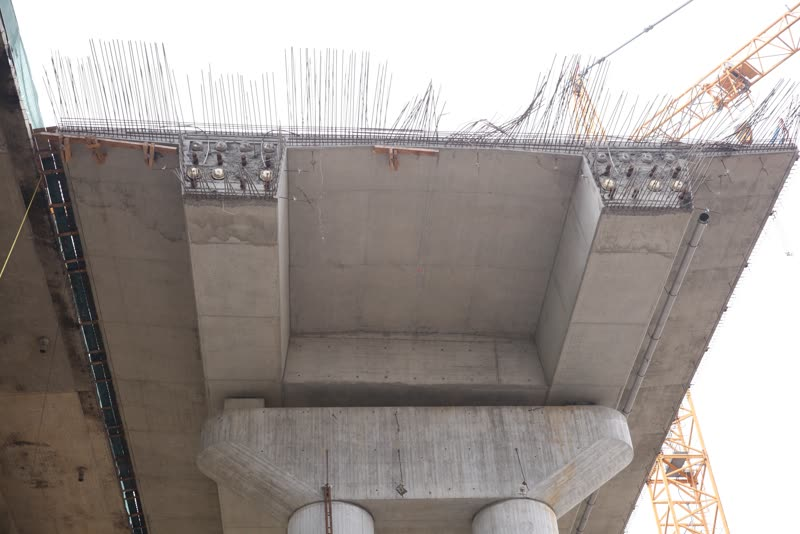
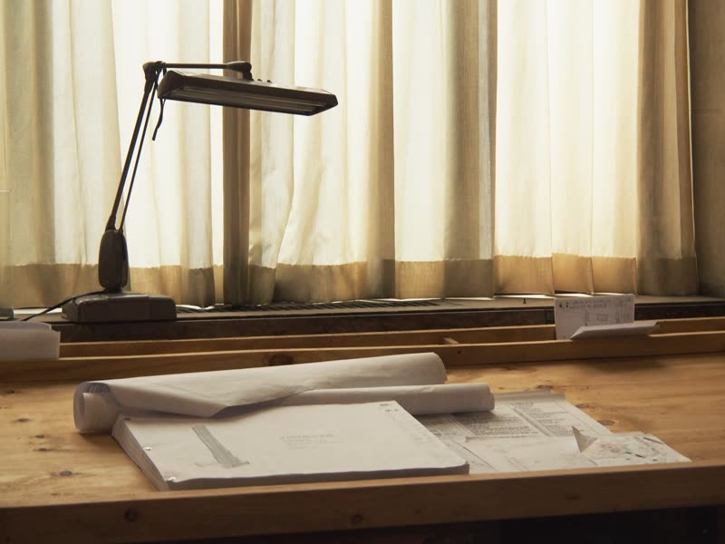
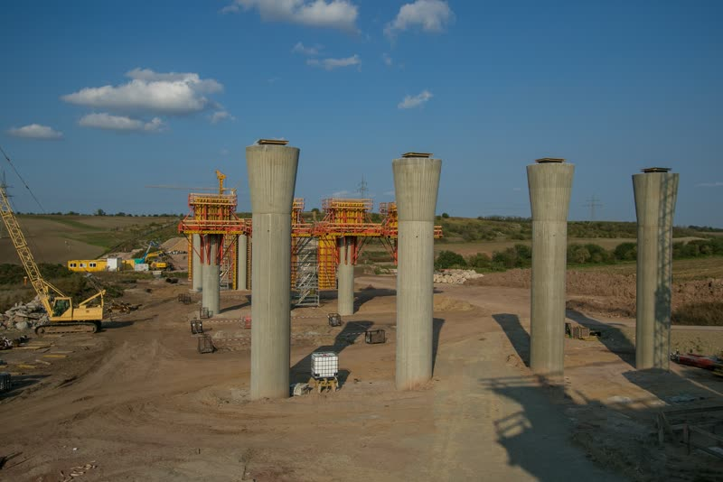
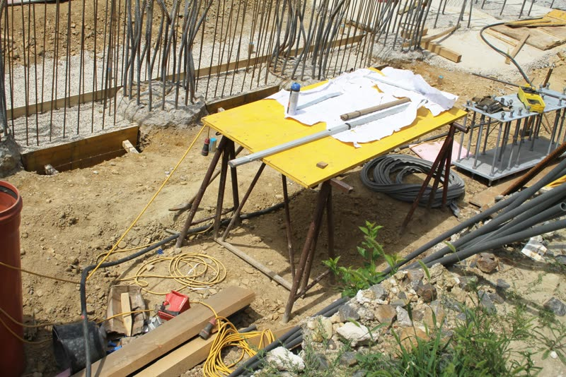
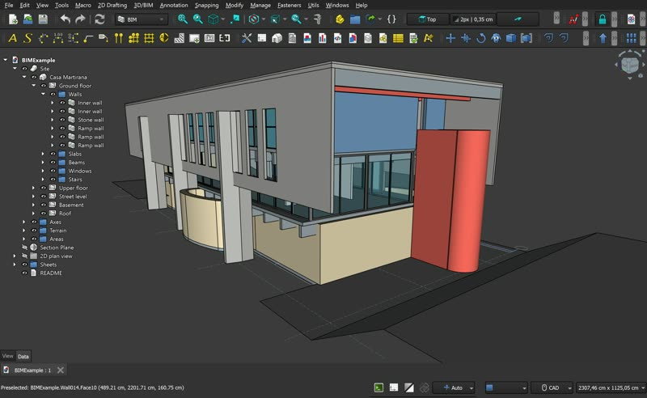
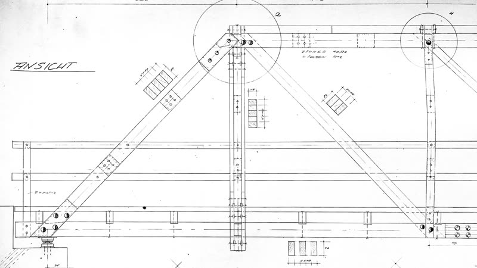

Ingenieurleistungen aus einer Hand
Sieben Leistungsfelder, die ineinandergreifen: von der Planung über die Vergabe bis zur Bauüberwachung.


Bauvorlageberechtigter nach VV BAU
Als bauvorlageberechtigtes Ingenieurbüro prüfen und überwachen wir Bahnprojekte. Wir stellen sicher, dass alle rechtlichen und technischen Vorgaben eingehalten werden.
- Fachtechnische Prüfung und Freigabe von Ausführungsunterlagen
- Einhaltung von Vorschriften und Normen
- Koordination mit dem Eisenbahn-Bundesamt und weiteren Behörden
- Koordination der Fachentwürfe

Objektplanung
Maßgeschneiderte Lösungen für Ihre Bauprojekte gemäß den Leistungsbildern der HOAI, ganzheitlich und effizient.
- Konstruktiver Ingenieurbau: Brücken, Stützwände, Fels- und Hangsicherungen, Lärmschutz
- Verkehrsanlagen und Bahnbau, auch Personenbahnhöfe
- Hochbau für gewerbliche und private Vorhaben
- Tiefbau: Kabeltrassen, Ver- und Entsorgungsleitungen, Entwässerung

Tragwerksplanung
Wir begleiten Sie von der Grundlagenermittlung bis zur prüffähigen statischen Berechnung, mit sicheren, wirtschaftlichen und nachhaltigen Tragwerken.
- Tragwerksentwurf und Genehmigungsstatik
- Detailnachweise und Nachberechnung von Bestandsbauwerken
- Schal-, Rohbau- und Bewehrungsplanung, Fugenbandpläne
- Stahlbau

Ausschreibung & Vergabe
Wir bereiten Ausschreibungen vor und wirken bei der Vergabe mit. Das Verfahren bleibt rechtssicher, wirtschaftlich und transparent.
- Leistungsbeschreibung mit Leistungsverzeichnis
- Mengenberechnung und Kostenermittlung
- Prüfung und Wertung der Angebote
- Bietergespräche und Vergabeempfehlung

Bauüberwachung & Bauoberleitung
Wir begleiten Ihr Bauvorhaben vor Ort, damit es termingerecht und qualitätsgesichert umgesetzt wird.
- Qualitätskontrolle der Bauausführung
- Kosten- und Terminkontrolle
- Baudokumentation und Prüfung der Bautagebücher
- Unterstützung bei der Abnahme, Mängelverfolgung

Projektsteuerung
Von der ersten Idee bis zur Fertigstellung: klare Organisation, zielgerichtete Kommunikation und Steuerung von Kosten, Terminen und Qualität.
- Projektorganisation und -koordination
- Termin-, Kosten- und Qualitätsmanagement
- Risikomanagement
- Vertrags- und Nachtragsmanagement, Dokumentation

Building Information Modeling (BIM)
Mit der BIM-Methodik planen wir effizienter, transparenter und zukunftssicher, von der Planung über die Ausführung bis zum Betrieb.
- BIM-gestützte Planung und Koordination
- Qualitäts- und Kollisionsprüfung
- Datenmanagement und Dokumentation
- Betrieb und Instandhaltung
Welche Leistung braucht Ihr Projekt?
Unsere Partner
- DB InfraGO AG
- DB Bahnbau Gruppe GmbH
- Autobahn GmbH
- Stadt Heidelberg
- Stadt Wetzlar
- Stadt Frankfurt am Main
- Stadt Altena
- RNV
- Lipoid
Partner werden noch ergänzt.
